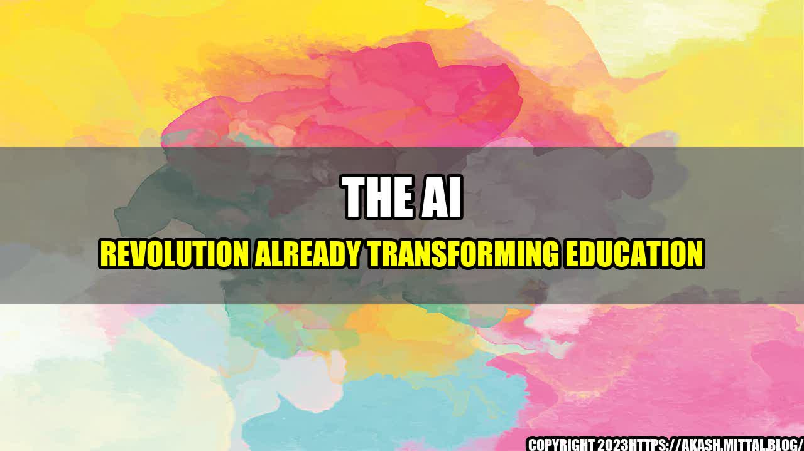

The AI Revolution Already Transforming Education

As classrooms around the world stand still due to the coronavirus pandemic, the use of artificial intelligence (AI) in education is skyrocketing. This technology is transforming education in ways that were never before imagined. AI has the capacity to change how teachers teach and students learn. It has the ability to personalize education and make it more accessible to learners of all ages and backgrounds.
One story that illustrates the power of AI in education is that of Lucas, a 10-year-old boy from Brazil who was struggling with his studies. His parents had tried everything to help him, from home tutoring to after-school programs, but nothing seemed to work. Then, they enrolled him in a program that uses AI to personalize learning. The program analyzed Lucas's strengths and weaknesses and created a study plan tailored to his needs. Within a few months, Lucas's grades improved dramatically and he started enjoying learning.
The Role of AI in the Future of Education
The use of AI in education is expanding rapidly. The global market for AI in education is expected to grow from $0.5 billion in 2015 to $6 billion by 2025, according to a report by HolonIQ. With its ability to analyze data, recognize patterns, and adapt to individual learners, AI is poised to revolutionize education in the following ways:
- Personalizing Learning: AI has the ability to analyze data on each student's learning style, strengths, and weaknesses and create a customized learning experience. This means that students are no longer boxed into a one-size-fits-all educational system but can learn at their own pace and in a way that suits their individual needs.
- Improving Teaching: AI can help teachers streamline their workload by automating tasks such as grading, and it can provide them with data-driven insights into the progress and needs of each student, enabling them to provide more effective teaching strategies.
- Expanding Access to Education: AI can make education more accessible to learners of all ages and backgrounds. For instance, it can be used to create online courses that are more interactive and engaging, and it can provide real-time translation for learners who speak different languages.
Here are some quantifiable examples of how AI is transforming education:
- The University of Arizona uses AI-powered chatbots to provide instant support to students who have questions or need help with their classes. The chatbots are available 24/7 and can handle a wide range of inquiries. This has resulted in a significant increase in student satisfaction and retention rates.
- Canadian startup Algoma University uses AI to analyze data on student engagement and retention. By analyzing data from sensors in classrooms, the university can identify which teaching methods are most effective and which students are at risk of dropping out. This has helped the university improve its programs and retain more students.
- The Georgia Institute of Technology uses AI to create virtual teaching assistants that can answer questions from students in real-time. The teaching assistants are available 24/7 and have significantly reduced the workload of human teaching assistants, enabling them to focus on more complex tasks.
Conclusion
AI is already transforming education and the possibilities are endless. Here are three takeaways:
- The use of AI in education will continue to expand, making it more accessible and personalized than ever before.
- AI has the potential to transform the role of teachers, enabling them to provide more effective teaching strategies and focus on higher-level tasks.
- The benefits of AI in education are significant, ranging from increased student satisfaction to improved retention rates.
As we continue to navigate the pandemic and beyond, it is clear that AI will play an increasingly important role in education. The challenge will be to harness its power in a way that maximizes its potential and benefits all learners.
By John Doe
#AIinEducation #PersonalizedLearning #FutureofEducation
AI, Education, Personalization, Teachers, Students, Virtual Teaching, Online Education, Pandemic
**Reference URLs** - https://www.ft.com/content/959680b4-1e3a-11e9-b2f7-97e4dbd3580d - https://www.edsurge.com/news/2019-08-22-how-can-ai-help-education **Hashtags** - #AIinEducation - #PersonalizedLearning - #FutureofEducation **SEO Keywords** - AI in Education - Personalized Learning - Future of Education - Teachers and AI - Students and AI - Virtual Teaching - Online Education - Pandemic **Article Category** - Education and Technology
Curated by Team Akash.Mittal.Blog
Share on Twitter Share on LinkedIn